3.1 Question 1 : GDP per capita growth / debt, GDP per capita per PPP growth / debt : relevance of the use of PPP in the analysis
3.1.1 GDP per capita (PPP) growth / debt
Code
suppressPackageStartupMessages(library(dplyr))library(tidyr)library(ggplot2)data <-read.csv("data/data_continent.csv")start_year <-2000# Specify the start year for analysisend_year <-2024# Specify the end year for analysis# Reshape the dataset from wide to long formatdata_long <- data |>pivot_longer(cols =starts_with("X"), # Columns for years (e.g., X1980, X1981, ...)names_to ="Year", # Name the new column for yearsnames_prefix ="X", # Remove the prefix "X" from year namesvalues_to ="Value"# Name the column containing the values ) |>mutate(Year =as.numeric(Year)) # Convert Year column to numeric# Filter data for the specified date perioddata_long <- data_long |>filter(Year >= start_year & Year <= end_year)gdp_per_capita <- data_long |>filter(INDICATOR.Name =="Gross domestic product (GDP), Per capita, purchasing power parity (PPP) international dollar") |>select(COUNTRY.Name, Continent, Year, GDP_per_capita_PPP = Value)debt <- data_long |>filter(INDICATOR.Name =="Gross debt, General government, Percent of GDP") |>select(COUNTRY.Name, Continent, Year, Debt = Value)merged_data <- gdp_per_capita |>inner_join(debt, by =c("COUNTRY.Name", "Continent", "Year"))prepared_data <- merged_data |>group_by(COUNTRY.Name, Continent) |>summarize(Avg_GDP_per_capita_PPP =mean(GDP_per_capita_PPP, na.rm =TRUE),Avg_Debt =mean(Debt, na.rm =TRUE) )
`summarise()` has grouped output by 'COUNTRY.Name'. You can override using the
`.groups` argument.
Code
prepared_data <- prepared_data |>drop_na()filtered_data <- prepared_data |>filter(!is.na(Continent))ggplot(filtered_data, aes(x = Avg_GDP_per_capita_PPP, y = Avg_Debt)) +geom_point(aes(color = Continent), size =3, alpha =0.7) +facet_wrap(~ Continent, scales ="free") +labs(title ="GDP Per Capita (PPP) vs Debt by Continent",x ="Average GDP Per Capita (PPP)",y ="Average Debt (% of GDP)",color ="Continent" ) +theme_minimal() +theme(plot.title =element_text(hjust =0.5, size =16),strip.text =element_text(size =12),axis.text.x =element_text(angle =45, hjust =1) )
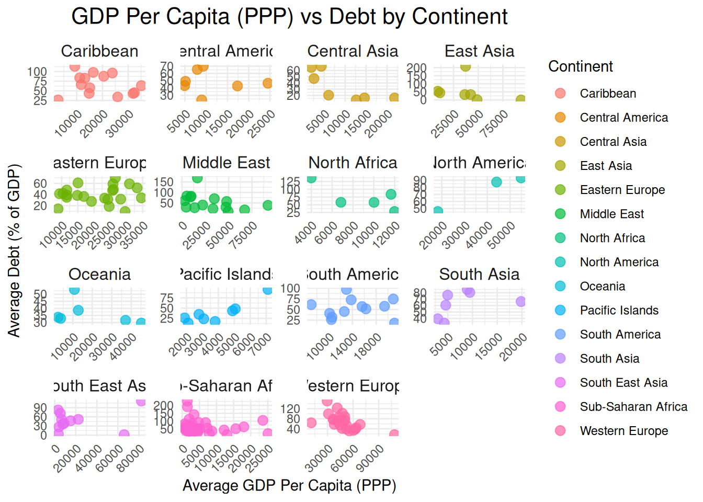
Code
# Filter and prepare the dataprepared_data <- data_long |>filter(INDICATOR.Name %in%c("Gross debt, General government, Percent of GDP","Net lending (+) / net borrowing (-), General government, Percent of GDP","Primary net lending (+) / net borrowing (-), General government, Percent of GDP","Gross domestic product (GDP), Current prices, US Dollar" )) |>pivot_wider(names_from = INDICATOR.Name, values_from = Value) |>rename(Gross_Debt =`Gross debt, General government, Percent of GDP`,Primary_Lending =`Primary net lending (+) / net borrowing (-), General government, Percent of GDP`,Lending =`Net lending (+) / net borrowing (-), General government, Percent of GDP`) |>filter(!is.na(Gross_Debt), !is.na(Primary_Lending), !is.na(Lending),!is.na(Year)) |>mutate(Interest_Payments =-Lending + Primary_Lending) |>select(COUNTRY.Name, Year, Interest_Payments, Gross_Debt, Continent)# Create folder docs/data if it does not existif (!dir.exists("docs/data")) {dir.create("docs/data")}# Save to a CSV file for use in D3.jswrite.csv(prepared_data, "docs/data/debt_interest_data.csv")
3.1.2 GDP per capita / debt
Code
gdp_per_capita <- data_long |>filter(INDICATOR.Name =="Gross domestic product (GDP), Current prices, Per capita, US Dollar") |>select(COUNTRY.Name, Continent, Year, GDP_per_capita = Value)debt <- data_long |>filter(INDICATOR.Name =="Gross debt, General government, Percent of GDP") |>select(COUNTRY.Name, Continent, Year, Debt = Value)merged_data <- gdp_per_capita |>inner_join(debt, by =c("COUNTRY.Name", "Continent", "Year"))prepared_data <- merged_data |>group_by(COUNTRY.Name, Continent) |>summarize(Avg_GDP_per_capita =mean(GDP_per_capita, na.rm =TRUE),Avg_Debt =mean(Debt, na.rm =TRUE) )
`summarise()` has grouped output by 'COUNTRY.Name'. You can override using the
`.groups` argument.
Code
prepared_data <- prepared_data |>drop_na()filtered_data <- prepared_data |>filter(!is.na(Continent))ggplot(filtered_data, aes(x = Avg_GDP_per_capita, y = Avg_Debt)) +geom_point(aes(color = Continent), size =3, alpha =0.7) +facet_wrap(~ Continent, scales ="free") +labs(title ="GDP Per Capita vs Debt by Continent",x ="Average GDP Per Capita (USD)",y ="Average Debt (% of GDP)",color ="Continent" ) +theme_minimal() +theme(plot.title =element_text(hjust =0.5, size =16),strip.text =element_text(size =8),axis.text.x =element_text(angle =45, hjust =1) )
`summarise()` has grouped output by 'COUNTRY.Name'. You can override using the
`.groups` argument.
Code
prepared_data <- prepared_data |>drop_na()filtered_data <- prepared_data |>filter(!is.na(Continent))ggplot(filtered_data, aes(x = Avg_GDP_per_capita_growth, y = Avg_Debt)) +geom_point(aes(color = Continent), size =3, alpha =0.7) +facet_wrap(~ Continent, scales ="free") +labs(title =paste0("GDP Per Capita Growth vs Debt by Continent (", start_year, "-", end_year, ")"),x ="Average GDP Per Capita Growth (%)",y ="Average Debt (% of GDP)",color ="Continent" ) +theme_minimal() +theme(plot.title =element_text(hjust =0.5, size =16),strip.text =element_text(size =12),axis.text.x =element_text(angle =45, hjust =1) )
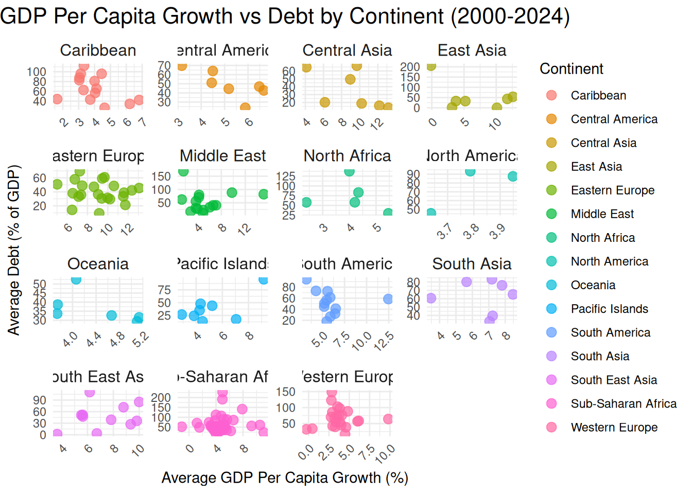
The diagrams depicting average GDP per capita (PPP) versus average debt levels by continent from 2000 to 2024 were analyzed to explore the long-term relationship between economic prosperity and debt across regions. By focusing on averaged values over this 24-year period, the goal was to smooth out short-term volatility and identify persistent trends, such as whether regions with higher average GDP per capita tend to maintain lower debt levels, or if certain continents exhibit a counterintuitive pairing of high prosperity and high indebtedness. These averaged plots reveal that while some regions align with expectations—such as areas with moderate GDP per capita and manageable debt—others, like parts of the Caribbean or East Asia, show sustained high debt levels despite relatively strong average economic output.
The use of averages also highlights long-term stability or vulnerabilities: regions with consistently high debt-to-GDP ratios may indicate systemic risks, even if short-term fluctuations are masked. However, this approach risks obscuring critical events, such as financial crises or rapid growth spurts within the timeframe, which could offer deeper context. For instance, anomalies in the data might reflect historical policy shifts or external shocks that a multi-year average cannot fully capture. While the analysis supports the hypothesis that GDP and debt are intertwined, it also challenges simplistic assumptions by underscoring regional idiosyncrasies. Future research could integrate granular temporal data with these averages to better disentangle the drivers of economic performance and debt sustainability.
3.2 Question 2 : G7 before and after 2008 crisis : the impact of the crisis on the G7 economies
ggplot(debt_data, aes(x = Period, y = Debt, fill = Period)) +geom_violin(trim =TRUE, alpha =0.7) +facet_wrap(~ COUNTRY.Name, scales ="free_y") +labs(title ="Gross Debt Across Four Periods in G7 Economies",x ="Period",y ="Gross Debt (% of GDP)",fill ="Period" ) +theme_minimal() +theme(plot.title =element_text(hjust =0.5, size =16),strip.text =element_text(size =12),axis.text.x =element_text(angle =45, hjust =1) )
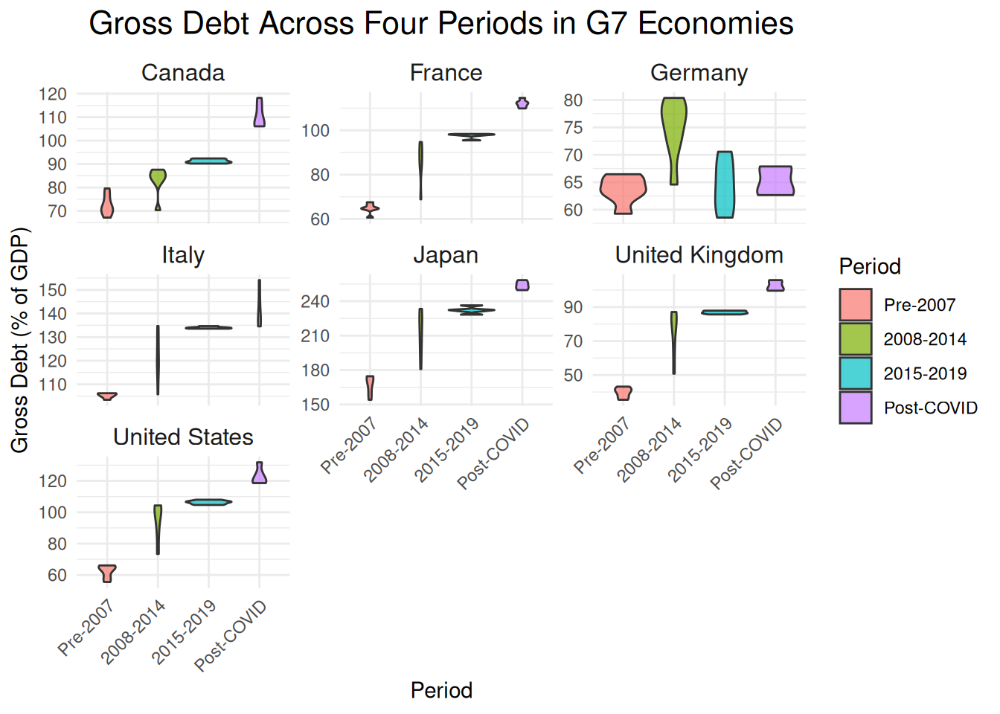
Code
ggplot(gdp_growth_data, aes(x = Period, y = GDP_Growth, fill = Period)) +geom_violin(trim =TRUE, alpha =0.7) +facet_wrap(~ COUNTRY.Name, scales ="free_y") +labs(title ="GDP Growth Across Four Periods in G7 Economies",x ="Period",y ="GDP Growth (%)",fill ="Period" ) +theme_minimal() +theme(plot.title =element_text(hjust =0.5, size =16),strip.text =element_text(size =12),axis.text.x =element_text(angle =45, hjust =1) )
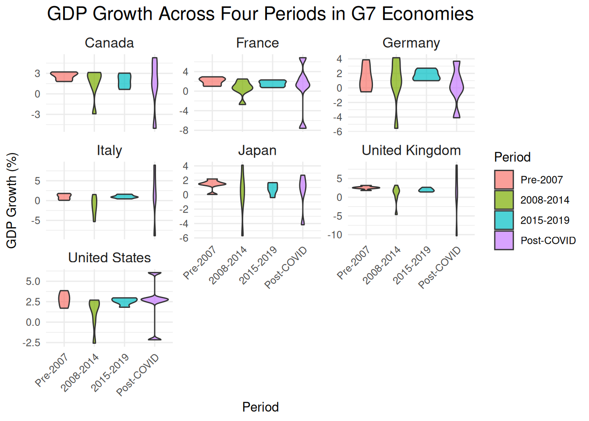
The diagrams analyzing unemployment rates, GDP growth, and gross debt (% of GDP) across G7 economies from pre-2007 to post-COVID periods were selected to assess the long-term impacts of the 2008 financial crisis and the COVID-19 pandemic on key economic indicators. By comparing four distinct periods—pre-2007 stability, crisis-driven turbulence (2008–2014), recovery (2015–2019), and post-COVID adjustments—the goal was to identify patterns in how these shocks influenced labor markets, growth trajectories, and fiscal health.
The data reveals stark contrasts: unemployment surged sharply post-2008 in economies like the U.S. and the U.K., reflecting the crisis’s severe labor market disruptions, while Germany’s resilient labor policies mitigated similar spikes. Post-COVID unemployment trends varied, with some nations rebounding faster due to targeted fiscal support. GDP growth, meanwhile, shows a pronounced collapse during 2008–2014, followed by uneven recovery, with Japan and Italy lagging behind other G7 members. Post-COVID GDP contractions were sharp but short-lived in most cases, underscoring the effectiveness of unprecedented stimulus measures.
Gross debt levels surged persistently across all periods, particularly post-2008 and post-COVID, with Japan and the U.S. reaching debt-to-GDP ratios exceeding 200% and 120%, respectively. This highlights the trade-off between crisis response (e.g., bailouts, stimulus) and long-term fiscal sustainability. While the data confirms expected trends—rising debt during crises and growth volatility—it also challenges assumptions of uniform recovery, exposing divergent national capacities to manage shocks. For instance, Germany’s combination of moderate debt growth and stable unemployment contrasts with the U.S.’s high debt-fueled recovery. These insights emphasize the role of policy frameworks and structural factors in shaping economic resilience, urging deeper analysis of country-specific strategies and external influences.
3.3 Question 3 : Covid impact on the economic factors of the world economy.
Code
periods <-list(`Pre-COVID`=c(2015, 2019),`Post-COVID`=c(2020, 2024))data <-read.csv("data/data_continent.csv")start_year <-2000# Specify the start year for analysisend_year <-2024# Specify the end year for analysisdata_long <- data |>pivot_longer(cols =starts_with("X"), names_to ="Year", names_prefix ="X", values_to ="Value" ) |>mutate(Year =as.numeric(Year)) cpi_data <- data_long |>filter(INDICATOR.Name =="All items, Consumer price index (CPI), Period average") |>select(COUNTRY.Name, Year, CPI = Value) |>mutate(Period =case_when( Year >= periods$`Pre-COVID`[1] & Year <= periods$`Pre-COVID`[2] ~"Pre-COVID", Year >= periods$`Post-COVID`[1] & Year <= periods$`Post-COVID`[2] ~"Post-COVID",TRUE~NA_character_ ) ) |>filter(!is.na(Period) &!is.na(CPI) &!is.na(Year)) |>group_by(COUNTRY.Name, Period) |>summarize(CPI =median(CPI, na.rm =TRUE)) |>ungroup()
`summarise()` has grouped output by 'COUNTRY.Name'. You can override using the
`.groups` argument.
Code
debt_data <- data_long |>filter(INDICATOR.Name =="Gross debt, General government, Percent of GDP") |>select(COUNTRY.Name, Year, Debt = Value) |>mutate(Period =case_when( Year >= periods$`Pre-COVID`[1] & Year <= periods$`Pre-COVID`[2] ~"Pre-COVID", Year >= periods$`Post-COVID`[1] & Year <= periods$`Post-COVID`[2] ~"Post-COVID",TRUE~NA_character_ ) ) |>filter(!is.na(Period) &!is.na(Debt) &!is.na(Year)) ggplot(cpi_data, aes(x = CPI, fill = Period)) +geom_density(alpha =0.7) +labs(title ="Density Plot of CPI Across the World (Pre-COVID vs Post-COVID)",x ="Consumer Price Index (CPI)",y ="Density",fill ="Period" ) +theme_minimal() +scale_x_continuous(limits =c(0,1000))+theme(plot.title =element_text(hjust =0.5, size =16),strip.text =element_text(size =12),axis.text.x =element_text(angle =45, hjust =1) )
Warning: Removed 20 rows containing non-finite outside the scale range
(`stat_density()`).
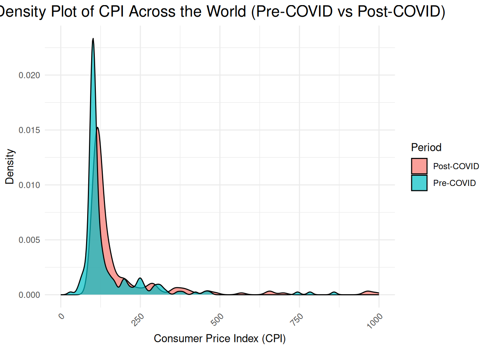
Code
ggplot(debt_data, aes(x = Debt, fill = Period)) +geom_density(alpha =0.7) +labs(title ="Density Plot of Debt (% of GDP) Across the World (Pre-COVID vs Post-COVID)",x ="Debt (% of GDP)",y ="Density",fill ="Period" ) +theme_minimal() +theme(plot.title =element_text(hjust =0.5, size =16),strip.text =element_text(size =12),axis.text.x =element_text(angle =45, hjust =1) )
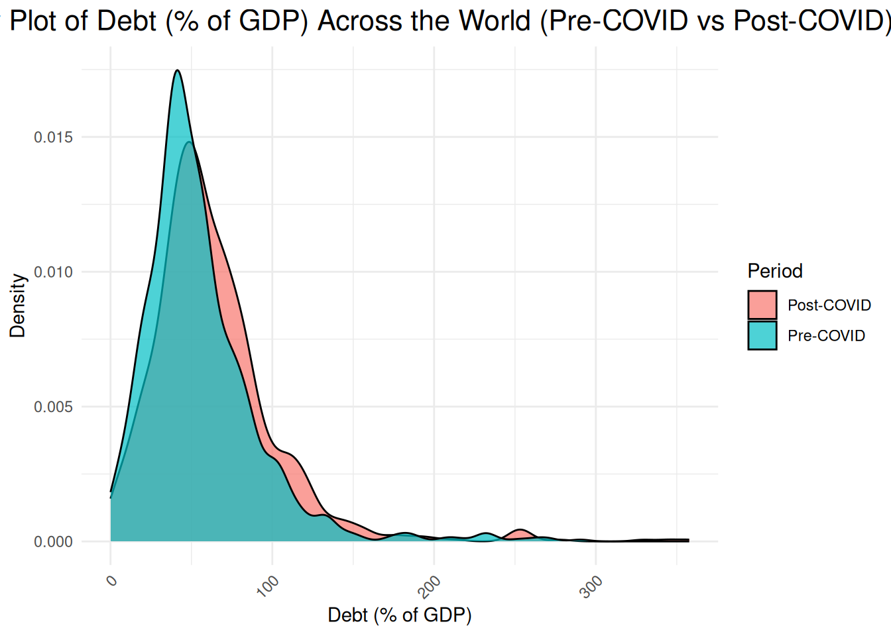
The density plots analyzing Consumer Price Index (CPI) and Debt (% of GDP) across continents pre- and post-COVID reveal how the pandemic reshaped global economic dynamics, emphasizing disparities in inflationary pressures and fiscal resilience. Post-COVID CPI distributions show a pronounced rightward shift, reflecting heightened inflation driven by supply chain disruptions and stimulus-induced demand, though with significant regional variability—developing regions like Africa and South America faced sharper price spikes due to import dependency, while East Asia maintained stability through supply chain controls. Similarly, debt distributions post-COVID became bimodal, splitting into moderate levels in advanced economies (e.g., Europe) and extreme highs in vulnerable regions (e.g., small island nations), underscoring divergent fiscal capacities: wealthier nations leveraged low-interest borrowing for recovery, while developing economies grappled with unsustainable debt amid collapsed revenues. While the data confirms COVID-19’s universal impact on inflation and debt, it also challenges assumptions of uniformity, exposing stark intra-continental disparities, such as debt crises in Caribbean nations contrasting with relative stability in mainland Central America. These findings highlight how the pandemic exacerbated pre-existing inequalities, with institutional strength and monetary autonomy determining recovery trajectories. The density approach further underscores the limitations of aggregation of all countries, masking pockets of acute crisis and urging policymakers to prioritize localized interventions. Ultimately, the analysis emphasizes the need for granular, context-specific strategies to address the uneven legacy of COVID-19 on global economic stability.
3.4 Question 4 : Predictions of the IMF of the economic state
Warning: Removed 49 rows containing non-finite outside the scale range
(`stat_density()`).
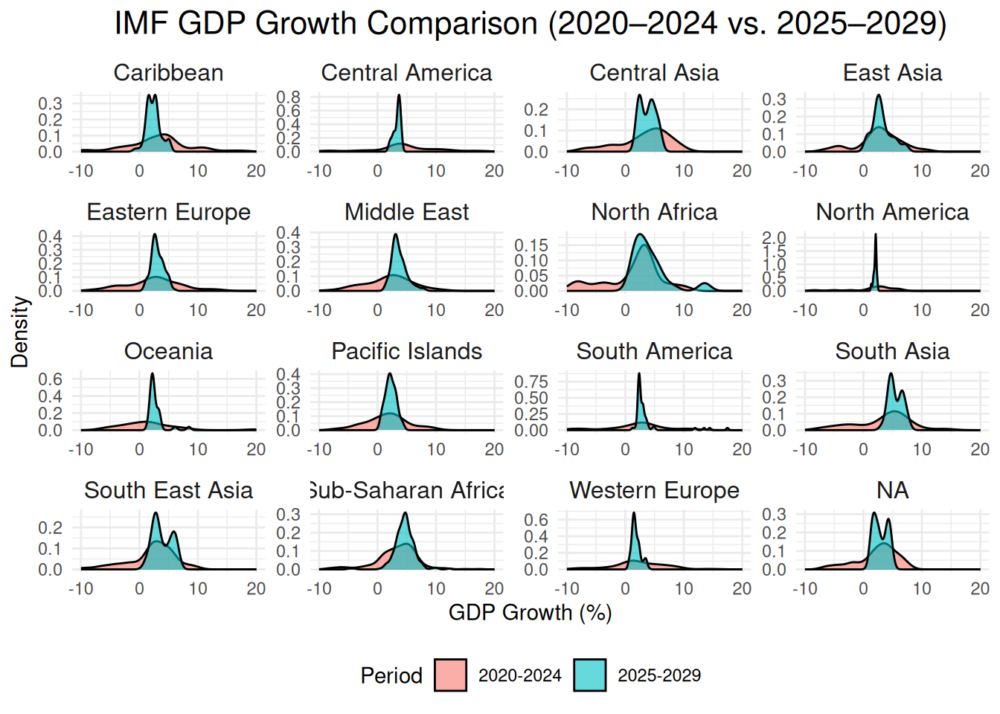
Code
debt_comparison_plot
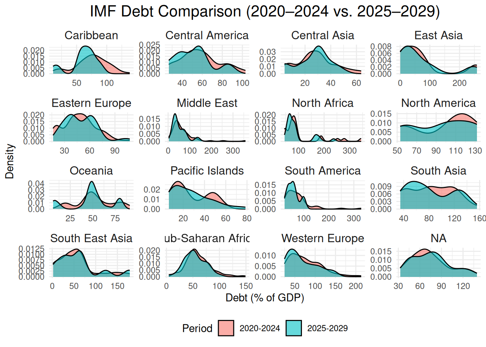
Code
cpi_comparison_plot
Warning: Removed 242 rows containing non-finite outside the scale range
(`stat_density()`).
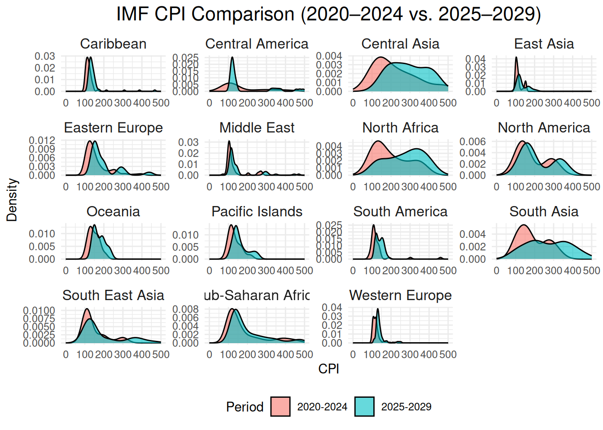
The IMF’s comparative projections for GDP growth, CPI inflation, and debt levels across regions (2020–2024 vs. 2025–2029) were analyzed to evaluate post-pandemic recovery trajectories and emerging risks. Despite data gaps (noted by warnings about removed rows), the charts reveal divergent regional outlooks. GDP growth is projected to modestly improve in 2025–2029 for most regions, with East Asia and South Asia leading recovery, while Sub-Saharan Africa and the Caribbean lag due to structural constraints and debt overhangs. CPI forecasts suggest inflationary pressures will ease slightly globally by 2025–2029, though regions like South America and the Middle East remain vulnerable to commodity volatility and currency instability. Debt projections are more concerning: advanced economies (e.g., North America, Western Europe) show stabilizing debt-to-GDP ratios, but developing regions (e.g., South America, Pacific Islands) face escalating debt, with South America’s ratios nearing 400% by 2029—a signal of potential fiscal crises.
Notably, the data includes inconsistencies, such as CPI-like decimal values erroneously listed under debt metrics for East Asia and Oceania, complicating interpretation. However, the broader trends confirm the IMF’s caution about uneven recoveries and debt sustainability challenges, particularly for resource-dependent and tourism-heavy economies. Unexpectedly, some regions with high post-COVID debt, like Central Asia, project stabilization, possibly reflecting IMF-backed reforms or austerity measures. These forecasts underscore the critical role of policy discipline and external support in shaping outcomes, while also highlighting the limitations of aggregated regional data, which may mask vulnerabilities in smaller or crisis-prone nations. Overall, the analysis stresses the need for targeted interventions to avert debt spirals and inflation resurgence in the most at-risk economies.
3.5 Question 5 : Regional GDP per Capita trends over time
Code
analysis_years <-c(2000:2024)income_data <- data_long |>filter( INDICATOR.Name =="Gross domestic product (GDP), Current prices, Per capita, US Dollar", Year %in% analysis_years ) |>select(COUNTRY.Name, Continent, Year, Income = Value) |>filter(!is.na(Income) &!is.na(Year) &!is.na(Continent))income_summary <- income_data |>filter(!is.na(Continent)) |>group_by(Continent, Year) |>summarise(Median_Income =median(Income, na.rm =TRUE),IQR_Income =IQR(Income, na.rm =TRUE),.groups ="drop" )ggplot(income_data, aes(x =as.factor(Year), y = Income, fill = Continent)) +geom_boxplot(outlier.shape =NA) +scale_y_log10() +facet_wrap(~ Continent, ncol =3, scales ="free_y") +labs(title ="GDP per Capita Over Time per Region",x ="Year",y ="GDP Per Capita (Log Scale)",fill ="Continent" ) +theme_minimal() +theme(plot.title =element_text(hjust =0.5, size =16),axis.text.x =element_text(angle =45, vjust =1, hjust =1), strip.text =element_text(size =12),legend.position ="bottom" )
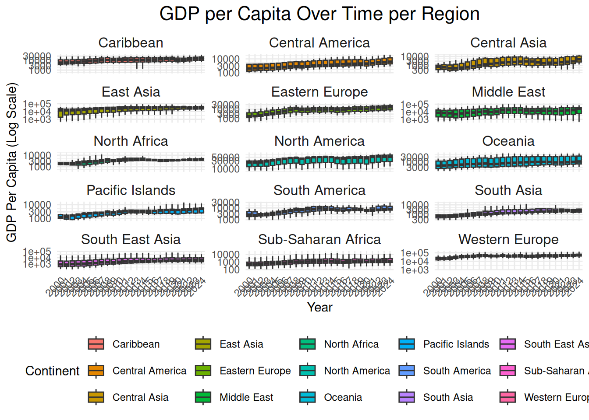
Code
income_data <- data_long |>filter( INDICATOR.Name =="Gross domestic product (GDP), Per capita, purchasing power parity (PPP) international dollar", Year %in% analysis_years ) |>select(COUNTRY.Name, Continent, Year, Income = Value) |>filter(!is.na(Income) &!is.na(Year) &!is.na(Continent))income_summary <- income_data |>filter(!is.na(Continent)) |>group_by(Continent, Year) |>summarise(Median_Income =median(Income, na.rm =TRUE),IQR_Income =IQR(Income, na.rm =TRUE),.groups ="drop" )ggplot(income_data, aes(x =as.factor(Year), y = Income, fill = Continent)) +geom_boxplot(outlier.shape =NA) +scale_y_log10() +facet_wrap(~ Continent, ncol =3, scales ="free_y") +labs(title ="GDP per Capita (PPP) Over Time per Region",x ="Year",y ="GDP Per Capita Per PPP (Log Scale)",fill ="Continent" ) +theme_minimal() +theme(plot.title =element_text(hjust =0.5, size =16),axis.text.x =element_text(angle =45, vjust =1, hjust =1),strip.text =element_text(size =12),legend.position ="bottom" )
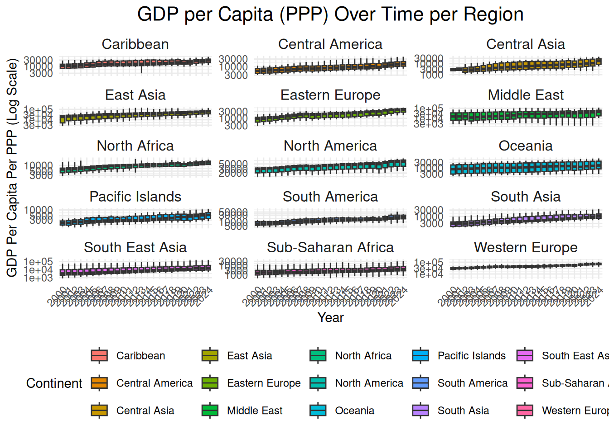
The analysis of GDP per capita (PPP) trends across global regions from 1980 to 2024 reveals significant disparities in economic development and growth trajectories, shaped by structural, institutional, and external factors. Regions such as East Asia exhibit robust, sustained growth driven by industrialization, export-oriented policies, and technological adoption, with countries like China and South Korea transitioning from low-income to high-middle-income status. In contrast, Sub-Saharan Africa and South Asia show slower progress, constrained by infrastructural deficits, political instability, and reliance on informal economies, though recent decades hint at gradual improvements in nations like India and Rwanda. North America and Western Europe maintain high GDP per capita levels, reflecting mature economies with innovation-driven growth, albeit moderated by aging populations and post-2008 financial constraints.
Volatility marks regions like Central Asia and the Middle East, where growth fluctuates with commodity prices (e.g., oil, minerals), exposing vulnerabilities to global market shocks. The Caribbean and Central America, despite susceptibility to natural disasters and external crises, demonstrate resilience through tourism recoveries and remittance inflows post-COVID, challenging assumptions about their economic fragility. Meanwhile, Eastern Europe’s post-Soviet transition reveals mixed outcomes: nations like Poland thrive through EU integration, while others lag due to unresolved structural reforms.
The use of PPP adjustments highlights nuanced living standards, underscoring that regions like South Asia achieve meaningful poverty reduction despite lower nominal GDP figures. The data confirms core hypotheses—such as the link between governance quality and growth—while offering unexpected insights: Oceania’s stability contrasts with North Africa’s stagnation despite resource wealth, pointing to the critical role of economic diversification. Post-2020 trends further emphasize COVID-19’s asymmetric impact, with advanced economies leveraging fiscal stimulus for rapid rebounds, while developing regions grapple with debt and inflation.
This analysis underscores that while macroeconomic frameworks explain broad trends, localized factors—policy coherence, institutional resilience, and shock responsiveness—determine regional outcomes. Policymakers must prioritize context-specific strategies to address persistent inequalities and leverage growth opportunities within the 1980–2024 continuum.
3.6 Question 6 : Fiscal Deficit and Debt Dynamics : Do countries borrow more when they are in a fiscal deficit?
Code
fiscal_balance_data <- data_long |>filter(INDICATOR.Name %in%c("Expenditure, General government, Percent of GDP","Gross domestic product (GDP), Current prices, US Dollar","Gross debt, General government, Percent of GDP","Revenue, General government, Percent of GDP","Net lending (+) / net borrowing (-), General government, Percent of GDP","Primary net lending (+) / net borrowing (-), General government, Percent of GDP")) |>pivot_wider(names_from = INDICATOR.Name, values_from = Value) |>select(COUNTRY.Name, Continent, Year, `Expenditure, General government, Percent of GDP`,`Gross domestic product (GDP), Current prices, US Dollar`,`Gross debt, General government, Percent of GDP`,`Revenue, General government, Percent of GDP`,`Net lending (+) / net borrowing (-), General government, Percent of GDP`,`Primary net lending (+) / net borrowing (-), General government, Percent of GDP`)colnames(fiscal_balance_data) <-c("Country", "Continent", "Year", "Expenditure", "GDP", "Debt", "Revenue", "Net_Lending", "Primary_Net_Lending")fiscal_balance_data <- fiscal_balance_data |>filter(!is.na(Expenditure), !is.na(GDP), !is.na(Debt), !is.na(Year), !is.na(Revenue), !is.na(Net_Lending), !is.na(Primary_Net_Lending))fiscal_balance_data <- fiscal_balance_data |>filter(!is.na(Expenditure), !is.na(GDP), !is.na(Debt), !is.na(Year), !is.na(Primary_Net_Lending), !is.na(Net_Lending))fiscal_balance_data <- fiscal_balance_data |>group_by(Country) |>arrange(Year) |>mutate(GDP_Growth = (GDP /lag(GDP) -1) *100) |>ungroup() |>filter(!is.na(GDP_Growth)) fiscal_balance_data <- fiscal_balance_data |>group_by(Country) |>arrange(Year) |>mutate(Fiscal_Deficit = Expenditure - Revenue) |>ungroup()fiscal_balance_data <- fiscal_balance_data |>group_by(Country) |>arrange(Year) |>mutate(Debt_Change = (Debt*GDP -lag(Debt)*lag(GDP))/lag(GDP)) |>ungroup() |>filter(!is.na(Debt_Change))fiscal_balance_data <- fiscal_balance_data |>group_by(Country) |>arrange(Year) |>mutate(Interest_Payment = Net_Lending - Primary_Net_Lending) |>ungroup() |>filter(!is.na(Interest_Payment))fiscal_balance_data <- fiscal_balance_data |>group_by(Country) |>arrange(Year) |>mutate(Primary_Fiscal_Deficit = Fiscal_Deficit - Interest_Payment) |>ungroup() |>filter(!is.na(Primary_Fiscal_Deficit))g7_data <- fiscal_balance_data |>filter(Country %in%c("Canada", "France", "Germany", "Italy", "Japan", "United Kingdom", "United States"))g7_long <- g7_data |>pivot_longer(cols =c(Primary_Fiscal_Deficit, Debt_Change, Fiscal_Deficit), names_to ="Metric", values_to ="Value")ggplot(g7_long, aes(x = Year, y = Value, color = Metric)) +geom_line(size =1) +facet_wrap(~ Country, scales ="free_y", ncol =3) +scale_color_manual(values =c("Primary_Fiscal_Deficit"="blue", "Debt_Change"="green", "Fiscal_Deficit"="red")) +labs(title ="Government Spending, GDP Growth, and Debt Trends in G7 Countries",subtitle ="Faceted Line Plot to Compare Trends Over Time",x ="Year", y ="Value (%)",color ="Metric" ) +theme_minimal() +theme(plot.title =element_text(hjust =0.5, size =16),plot.subtitle =element_text(hjust =0.5, size =12),legend.position ="bottom",axis.text.x =element_text(angle =45, hjust =1) )
Warning: Using `size` aesthetic for lines was deprecated in ggplot2 3.4.0.
ℹ Please use `linewidth` instead.
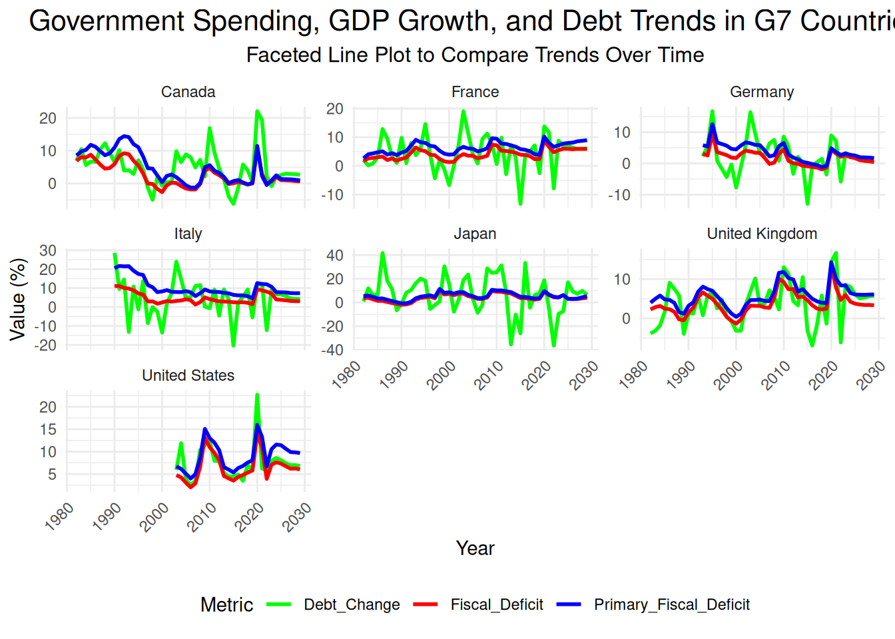
In both the U.S. and the U.K., primary deficits often precede or move in tandem with overall fiscal deficits, especially during periods of economic stress, such as the 2008 financial crisis and the COVID-19 pandemic. This alignment reflects how rising interest obligations amplify deficits even when governments reduce primary imbalances. The U.S., for instance, demonstrates a consistent pattern of increasing overall deficits during these periods, driven by both primary fiscal stimulus and growing debt-servicing costs. The U.K. follows a similar trajectory, though with slightly less pronounced swings, reflecting differences in fiscal strategies and interest rate sensitivity.
By contrast, in countries like Japan and Italy, fiscal deficits and debt changes often diverge, suggesting that high baseline debt levels and interest burdens weigh heavily on overall fiscal positions regardless of primary fiscal trends. In these cases, debt-servicing costs dominate fiscal outcomes, creating a disconnect between primary deficit management and debt dynamics.
Addionally, the euro’s creation in 2002 provides further context for eurozone countries (France, Germany, and Italy). The introduction of the euro aimed to enhance fiscal discipline, and while Germany largely adhered to these principles with minimal divergence between primary and overall deficits, France and Italy exhibited greater fluctuations. Italy, in particular, faced persistent challenges with interest burdens overshadowing primary deficits, limiting its ability to reduce debt despite the eurozone’s constraints.
External shocks, such as the 2008 crisis and COVID-19, helps in shaping borrowing behavior. Across all countries, debt changes often spike during these periods, decoupling from both primary and overall fiscal deficits. This underscores the role of crisis-driven borrowing in increasing debt levels, irrespective of short-term fiscal positions.
3.7 Question 7 : Effective Interest Rates evolution per region
Code
library(dplyr)library(tidyr)first_year <-2002last_year <-2024filtered_data <- data_long |>filter(INDICATOR.Name %in%c("Net lending (+) / net borrowing (-), General government, Percent of GDP","Primary net lending (+) / net borrowing (-), General government, Percent of GDP","Gross domestic product (GDP), Current prices, US Dollar","Gross debt, General government, Percent of GDP","Revenue, General government, Percent of GDP","Expenditure, General government, Percent of GDP" ), Year >= first_year, Year <= last_year)wide_data <- filtered_data |>pivot_wider(names_from = INDICATOR.Name,values_from = Value ) |>rename(Net_Lending_Borrowing =`Net lending (+) / net borrowing (-), General government, Percent of GDP`,Primary_Net_Lending_Borrowing =`Primary net lending (+) / net borrowing (-), General government, Percent of GDP`,GDP =`Gross domestic product (GDP), Current prices, US Dollar`,Debt_Percent_GDP =`Gross debt, General government, Percent of GDP`,Revenue =`Revenue, General government, Percent of GDP`,Expenditure =`Expenditure, General government, Percent of GDP` )wide_data <- wide_data |>mutate(Interest_Payments_Percent_GDP =-Net_Lending_Borrowing + Primary_Net_Lending_Borrowing,Interest_Payments = Interest_Payments_Percent_GDP * GDP /100,Interest_Rate = Interest_Payments_Percent_GDP / Debt_Percent_GDP*100,Interest_Payments_To_Revenue = Interest_Payments_Percent_GDP / Revenue*100,GDP_Growth = (GDP /lag(GDP) -1) *100 )boxplot_data <- wide_data |>filter(!is.na(Interest_Rate) &!is.na(Continent) &!is.na(Year)) ggplot(boxplot_data, aes(x =factor(Year), y = Interest_Rate, fill = Continent)) +geom_boxplot(outlier.shape =NA) +facet_wrap(~ Continent, ncol =4, scales ="free_y") +labs(title ="Boxplot of Interest Rates Over Time by Continent",subtitle ="Distribution of interest rates across continents over time",x ="Year",y ="Interest Rate (%)",fill ="Continent" ) +theme_minimal() +scale_y_continuous(limits =c(0,10))+theme(plot.title =element_text(hjust =0.5, size =16),plot.subtitle =element_text(hjust =0.5, size =12),axis.text.x =element_text(angle =45, hjust =1, size =8),axis.text.y =element_text(size =10),legend.position ="bottom" )
Warning: Removed 311 rows containing non-finite outside the scale range
(`stat_boxplot()`).
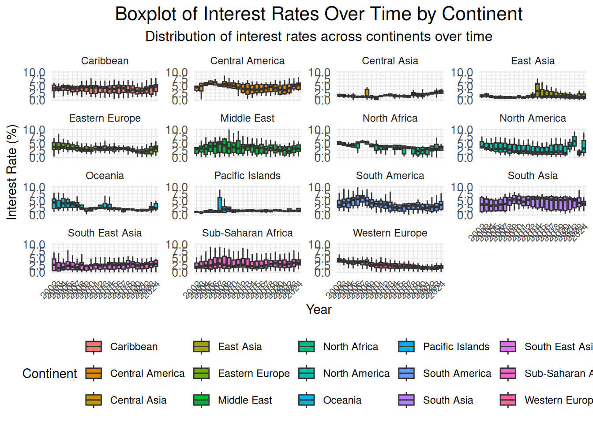
Code
ggplot(boxplot_data, aes(x =factor(Year), y = Interest_Rate)) +geom_boxplot(fill ="skyblue", outlier.shape =NA) +labs(title ="Boxplot of Interest Rates Over Time for the Whole World",subtitle ="Distribution of interest rates globally over time",x ="Year",y ="Interest Rate (%)" ) +theme_minimal() +scale_y_continuous(limits =c(-10,20))+theme(plot.title =element_text(hjust =0.5, size =16),plot.subtitle =element_text(hjust =0.5, size =12),axis.text.x =element_text(angle =45, hjust =1, size =8),axis.text.y =element_text(size =10) )
Warning: Removed 71 rows containing non-finite outside the scale range
(`stat_boxplot()`).
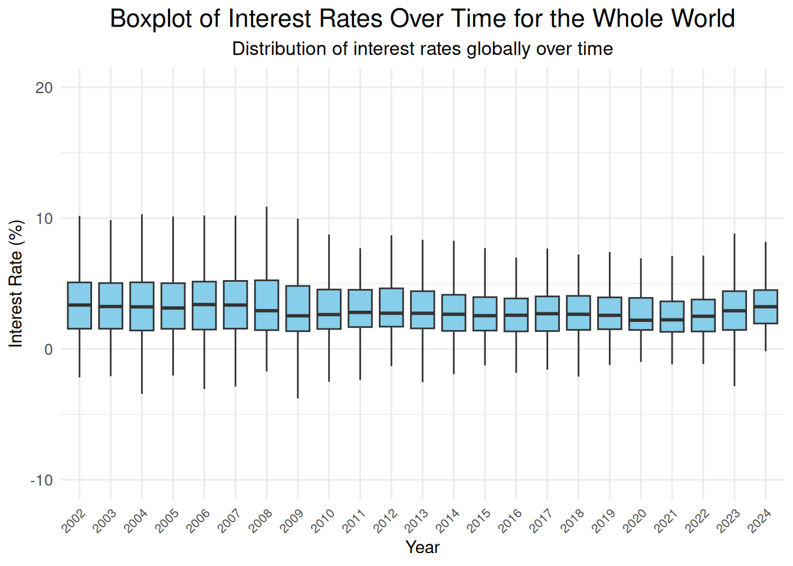
Effective interest rates, calculated as interest payments divided by total debt, reveal the cost of borrowing for countries. The regional breakdown highlights significant disparities—while North America and Western Europe enjoy relatively low and stable borrowing costs, regions like Sub-Saharan Africa, South Asia, and Latin America face higher interest rates and greater volatility. The creation of the euro in 2002 played a key role in reducing borrowing costs for Western European countries, as investor confidence increased. However, the European debt crisis of 2010-2012 briefly disrupted this trend, causing temporary spikes in interest rates for weaker economies in the region.
Globally, interest rates trended downward from the early 2000s until around 2020, largely due to expansionary monetary policies, particularly after the 2008 financial crisis. The ability to borrow at lower rates helped many countries sustain high levels of debt without immediate financial distress. However, after 2020, the trend appears to reverse, with rising interest rates reflecting inflation concerns and monetary tightening. Comparing these trends to fiscal deficit and debt accumulation dynamics, we see that regions with high borrowing costs and fiscal deficits may face greater sustainability challenges. As global interest rates rise, countries with fragile fiscal positions may struggle with refinancing debt, making future fiscal discipline and monetary policy coordination even more critical.
3.8 Question 8 : Correlation between Fiscal Expenditure and Debt Change and Interest Fiscal Expenditure
Code
library(ggplot2)library(dplyr)correlation_data <- fiscal_balance_data |>group_by(Continent) |>summarize(Primary_Fiscal_Deficit_vs_Debt_Change =cor(Primary_Fiscal_Deficit, Debt_Change, use ="complete.obs"),Fiscal_Deficit_vs_Debt_Change =cor(Fiscal_Deficit, Debt_Change, use ="complete.obs") ) |>pivot_longer(cols =c(Primary_Fiscal_Deficit_vs_Debt_Change, Fiscal_Deficit_vs_Debt_Change),names_to ="Correlation_Type",values_to ="Correlation" ) correlation_data <- correlation_data |>mutate(Correlation_Type =factor(Correlation_Type, levels =c("Primary_Fiscal_Deficit_vs_Debt_Change", "Fiscal_Deficit_vs_Debt_Change")))ggplot(correlation_data, aes(x =reorder(Continent, Correlation), y = Correlation, fill = Correlation_Type)) +geom_bar(stat ="identity", position =position_dodge()) +labs(title ="Correlation Between Fiscal Deficit and Debt Change",subtitle ="Comparison by Continent and Correlation Type",x ="Continent",y ="Correlation",fill ="Correlation Type" ) +theme_minimal() +theme(plot.title =element_text(hjust =0.5, size =16),plot.subtitle =element_text(hjust =0.5, size =12),axis.text.x =element_text(angle =45, hjust =1),legend.position ="bottom" ) +scale_fill_manual(values =c("Primary_Fiscal_Deficit_vs_Debt_Change"="blue","Fiscal_Deficit_vs_Debt_Change"="red"))
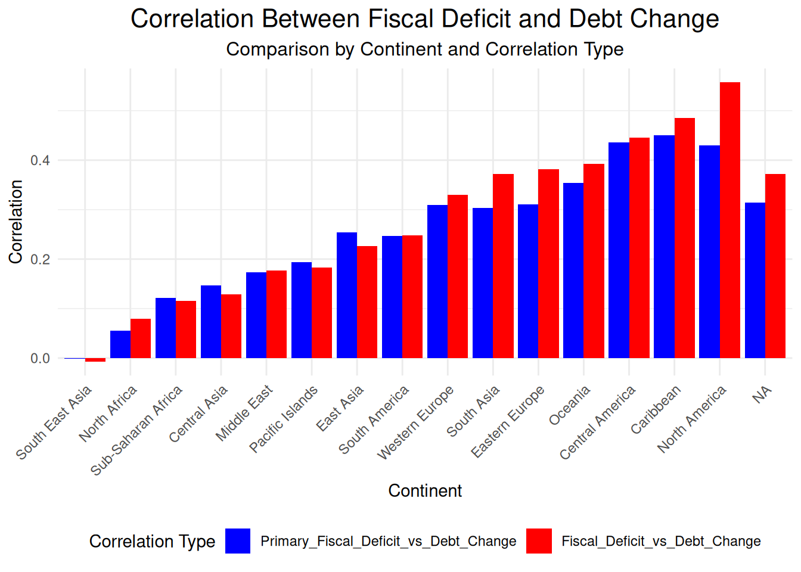
By comparing the correlations the fiscal deficits, we aim to understand the extent to which borrowing is driven by fiscal imbalances and whether interest payments (excluded in primary deficits) significantly alter the relationship.
Globally, the results reveal notable regional differences. North America shows the strongest correlation between fiscal deficits (both overall and primary) and debt changes, suggesting that borrowing in this region closely follows fiscal policy dynamics. This supports the hypothesis that fiscal deficits, including primary deficits, are key drivers of borrowing in advanced economies like the United States and Canada. Interestingly, the Caribbean, Central America, and Oceania also exhibit relatively high correlations, indicating that fiscal imbalances significantly impact borrowing behavior in these regions as well.
In contrast, regions such as Southeast Asia, North Africa, and Sub-Saharan Africa display weaker correlations, particularly between primary fiscal deficits and debt changes. This suggests that factors other than fiscal deficits, such as external borrowing conditions, foreign aid, or structural economic challenges, may play a larger role in driving debt changes in these regions. The relatively low correlation for primary deficits indicates that interest payments, debt restructuring, or crisis-related borrowing may significantly distort the direct relationship between fiscal policy and debt dynamics.
Western Europe and Eastern Europe show moderate correlations, with slightly higher values for overall fiscal deficits compared to primary deficits. This aligns with the dynamics of many European economies, where high baseline debt levels and interest burdens amplify the impact of fiscal deficits on borrowing. Notably, the creation of the euro and its associated fiscal rules likely contributed to the relatively disciplined fiscal behavior in Western Europe, though external shocks like the 2008 crisis temporarily disrupted this trend.
The comparison between overall and primary deficits highlights the significant role of interest payments in certain regions. For example, the gap between red and blue bars is more pronounced in regions with high debt burdens, such as Central America and the Caribbean, suggesting that interest costs substantially drive borrowing beyond primary fiscal trends.
3.9 Question 9 : BRICS vs G7 economies : GDP vs GDP(PPP)
Code
world <-c("World")g7_countries <-c("United States", "Canada", "United Kingdom", "Germany", "France", "Italy", "Japan")brics_countries <-c("Russia, Russian Federation", "Brazil", "India", "China, People's Republic of", "South Africa", "Egypt, Arab Republic of", "Ethiopia, The Federal Democratic Republic of", "Iran, Islamic Republic of", "United Arab Emirates", "Indonesia")indicator_list <-c("Gross domestic product (GDP), Per capita, purchasing power parity (PPP) international dollar","Population, Number","Gross domestic product (GDP), Purchasing power parity (PPP) international dollar, percent of world GDP","Gross domestic product (GDP), Current prices, US Dollar")country_data <- data_long |>filter(COUNTRY.Name %in% g7_countries | COUNTRY.Name %in% brics_countries | COUNTRY.Name %in% world) |>filter(INDICATOR.Name %in% indicator_list) |>pivot_wider(names_from = INDICATOR.Name, values_from = Value) |>select(COUNTRY.Name, Year, `Gross domestic product (GDP), Per capita, purchasing power parity (PPP) international dollar`, `Population, Number`, `Gross domestic product (GDP), Purchasing power parity (PPP) international dollar, percent of world GDP`, `Gross domestic product (GDP), Current prices, US Dollar`) |>rename(GDP_Per_Capita =`Gross domestic product (GDP), Per capita, purchasing power parity (PPP) international dollar`,Population =`Population, Number`,GDP_Share =`Gross domestic product (GDP), Purchasing power parity (PPP) international dollar, percent of world GDP`,GDP =`Gross domestic product (GDP), Current prices, US Dollar`)|>filter(COUNTRY.Name =="World"| (!is.na(Year) &!is.na(GDP_Per_Capita) &!is.na(Population) &!is.na(GDP_Share) &!is.na(GDP)))
Code
library(ggplot2)library(dplyr)target_year <-2024gdp_data <- country_data |>filter(Year == target_year) |>mutate(Group =case_when( COUNTRY.Name %in% g7_countries ~"G7", COUNTRY.Name %in% brics_countries ~"BRICS", COUNTRY.Name == world ~"World",TRUE~"Rest of the World" ) )gdp_totals <- gdp_data |>group_by(Group) |>summarise(Total_GDP =sum(GDP, na.rm =TRUE)) |>pivot_wider(names_from = Group, values_from = Total_GDP, values_fill =0)rest_of_world_gdp <- gdp_totals$World - (gdp_totals$G7 + gdp_totals$BRICS)gdp_data <- gdp_data |>mutate(Group =ifelse(Group =="Rest of the World", "Rest of the World", Group) ) |>filter(Group !="World") |>bind_rows(tibble(COUNTRY.Name ="Rest of the World",Year = target_year,GDP = rest_of_world_gdp,Group ="Rest of the World" ) )gdp_data <- gdp_data |>group_by(Group) |>summarise(Total_GDP =sum(GDP, na.rm=TRUE)) |>mutate(Percentage = Total_GDP /sum(Total_GDP) *100,Label =paste0(Group, "\n", round(Percentage, 2), "%") )gdp_pie_chart <-ggplot(gdp_data, aes(x ="", y = Total_GDP, fill = Group)) +geom_bar(stat ="identity", width =1, color ="white") +coord_polar("y", start =0) +geom_text(aes(label = Label), position =position_stack(vjust =0.5), size =5) +labs(title =paste("GDP Share Distribution: G7, BRICS, and Rest of the World (", target_year, ")", sep =""),fill ="Group" ) +scale_fill_manual(values =c("G7"="blue", "BRICS"="orange", "Rest of the World"="grey") ) +theme_void() +theme(plot.title =element_text(hjust =0.5, size =16),legend.position ="bottom" )print(gdp_pie_chart)
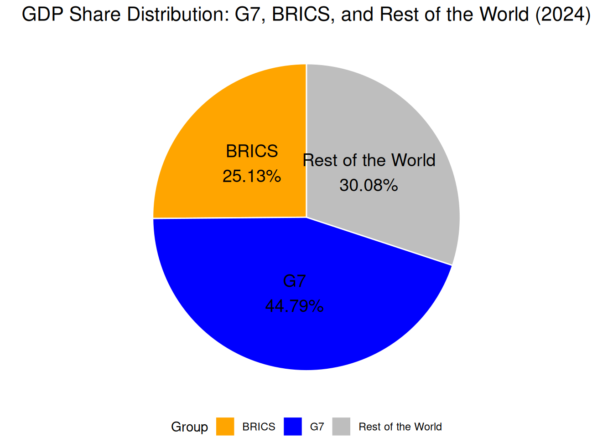
Code
library(ggplot2)library(dplyr)target_year <-2029gdp_data <- country_data |>filter(Year == target_year) |>mutate(Group =case_when( COUNTRY.Name %in% g7_countries ~"G7", COUNTRY.Name %in% brics_countries ~"BRICS", COUNTRY.Name == world ~"World",TRUE~"Rest of the World" ) )gdp_totals <- gdp_data |>group_by(Group) |>summarise(Total_GDP =sum(GDP, na.rm =TRUE)) |>pivot_wider(names_from = Group, values_from = Total_GDP, values_fill =0)rest_of_world_gdp <- gdp_totals$World - (gdp_totals$G7 + gdp_totals$BRICS)gdp_data <- gdp_data |>mutate(Group =ifelse(Group =="Rest of the World", "Rest of the World", Group) ) |>filter(Group !="World") |>bind_rows(tibble(COUNTRY.Name ="Rest of the World",Year = target_year,GDP = rest_of_world_gdp,Group ="Rest of the World" ) )gdp_data <- gdp_data |>group_by(Group) |>summarise(Total_GDP =sum(GDP, na.rm=TRUE)) |>mutate(Percentage = Total_GDP /sum(Total_GDP) *100,Label =paste0(Group, "\n", round(Percentage, 2), "%") )gdp_pie_chart <-ggplot(gdp_data, aes(x ="", y = Total_GDP, fill = Group)) +geom_bar(stat ="identity", width =1, color ="white") +coord_polar("y", start =0) +geom_text(aes(label = Label), position =position_stack(vjust =0.5), size =5) +labs(title =paste("GDP Share Distribution: G7, BRICS, and Rest of the World (", target_year, ")", sep =""),fill ="Group" ) +scale_fill_manual(values =c("G7"="blue", "BRICS"="orange", "Rest of the World"="grey") ) +theme_void() +theme(plot.title =element_text(hjust =0.5, size =16),legend.position ="bottom" )print(gdp_pie_chart)
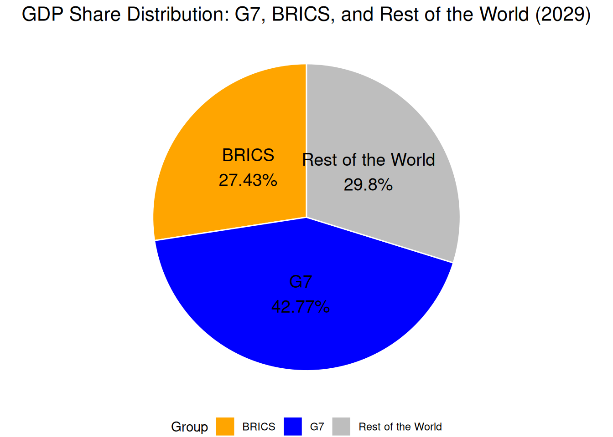
Code
library(ggplot2)library(dplyr)target_year <-2024gdp_share_data <- country_data |>filter(Year == target_year) |>mutate(Group =case_when( COUNTRY.Name %in% g7_countries ~"G7", COUNTRY.Name %in% brics_countries ~"BRICS", COUNTRY.Name == world ~"World",TRUE~"Rest of the World" ) )gdp_share_totals <- gdp_share_data |>group_by(Group) |>summarise(Total_GDP_Share =sum(GDP_Share, na.rm =TRUE)) |>pivot_wider(names_from = Group, values_from = Total_GDP_Share, values_fill =0)rest_of_world_gdp_share <-100- (gdp_share_totals$G7 + gdp_share_totals$BRICS)gdp_share_data <- gdp_share_data |>mutate(Group =ifelse(Group =="Rest of the World", "Rest of the World", Group) ) |>filter(Group !="World") |>bind_rows(tibble(COUNTRY.Name ="Rest of the World",Year = target_year,GDP_Share = rest_of_world_gdp_share,Group ="Rest of the World" ) )gdp_share_data <- gdp_share_data |>group_by(Group) |>summarise(Total_GDP_Share =sum(GDP_Share, na.rm =TRUE)) |>mutate(Percentage = Total_GDP_Share /sum(Total_GDP_Share) *100,Label =paste0(Group, "\n", round(Percentage, 2), "%") )gdp_share_pie_chart <-ggplot(gdp_share_data, aes(x ="", y = Total_GDP_Share, fill = Group)) +geom_bar(stat ="identity", width =1, color ="white") +coord_polar("y", start =0) +geom_text(aes(label = Label), position =position_stack(vjust =0.5), size =5) +labs(title =paste("GDP (PPP) Share Distribution: G7, BRICS, and Rest of the World (", target_year, ")", sep =""),fill ="Group" ) +scale_fill_manual(values =c("G7"="blue", "BRICS"="orange", "Rest of the World"="grey") ) +theme_void() +theme(plot.title =element_text(hjust =0.5, size =16),legend.position ="bottom" )print(gdp_share_pie_chart)
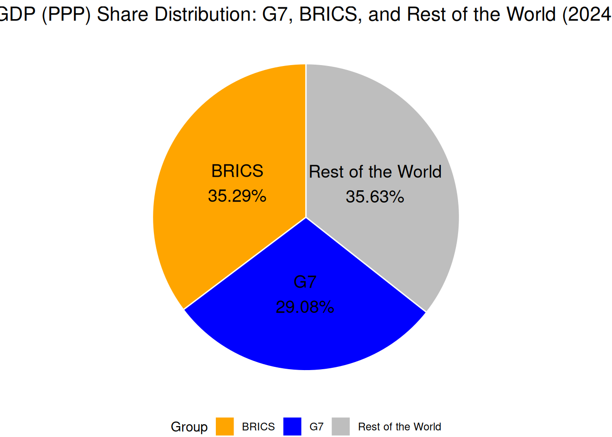
Code
library(ggplot2)library(dplyr)target_year <-2029gdp_share_data <- country_data |>filter(Year == target_year) |>mutate(Group =case_when( COUNTRY.Name %in% g7_countries ~"G7", COUNTRY.Name %in% brics_countries ~"BRICS", COUNTRY.Name == world ~"World",TRUE~"Rest of the World" ) )gdp_share_totals <- gdp_share_data |>group_by(Group) |>summarise(Total_GDP_Share =sum(GDP_Share, na.rm =TRUE)) |>pivot_wider(names_from = Group, values_from = Total_GDP_Share, values_fill =0)rest_of_world_gdp_share <-100- (gdp_share_totals$G7 + gdp_share_totals$BRICS)gdp_share_data <- gdp_share_data |>mutate(Group =ifelse(Group =="Rest of the World", "Rest of the World", Group) ) |>filter(Group !="World") |>bind_rows(tibble(COUNTRY.Name ="Rest of the World",Year = target_year,GDP_Share = rest_of_world_gdp_share,Group ="Rest of the World" ) )gdp_share_data <- gdp_share_data |>group_by(Group) |>summarise(Total_GDP_Share =sum(GDP_Share, na.rm =TRUE)) |>mutate(Percentage = Total_GDP_Share /sum(Total_GDP_Share) *100,Label =paste0(Group, "\n", round(Percentage, 2), "%") )gdp_share_pie_chart <-ggplot(gdp_share_data, aes(x ="", y = Total_GDP_Share, fill = Group)) +geom_bar(stat ="identity", width =1, color ="white") +coord_polar("y", start =0) +geom_text(aes(label = Label), position =position_stack(vjust =0.5), size =5) +labs(title =paste("GDP (PPP) Share Distribution: G7, BRICS, and Rest of the World (", target_year, ")", sep =""),fill ="Group" ) +scale_fill_manual(values =c("G7"="blue", "BRICS"="orange", "Rest of the World"="grey") ) +theme_void() +theme(plot.title =element_text(hjust =0.5, size =16),legend.position ="bottom" )print(gdp_share_pie_chart)
library(ggplot2)library(dplyr)target_year <-2029population_data <- country_data |>filter(Year == target_year) |>filter(COUNTRY.Name %in%c(g7_countries, brics_countries)) |>mutate(Group =ifelse(COUNTRY.Name %in% g7_countries, "G7", "BRICS"))population_data <- population_data |>arrange(desc(Population)) |>mutate(COUNTRY.Name =factor(COUNTRY.Name, levels =unique(COUNTRY.Name)))population_plot <-ggplot(population_data, aes(x = COUNTRY.Name, y = Population, fill = Group)) +geom_bar(stat ="identity", color ="black", width =0.7) +labs(title ="Population of G7 and BRICS Countries (2024)",x ="Country",y ="Population (in billions)",fill ="Group" ) +scale_fill_manual(values =c("G7"="blue", "BRICS"="red") ) +theme_minimal() +theme(plot.title =element_text(hjust =0.5, size =16),axis.text.x =element_text(angle =45, hjust =1),axis.text.y =element_text(size =10),legend.position ="top" )# Print the plotprint(population_plot)
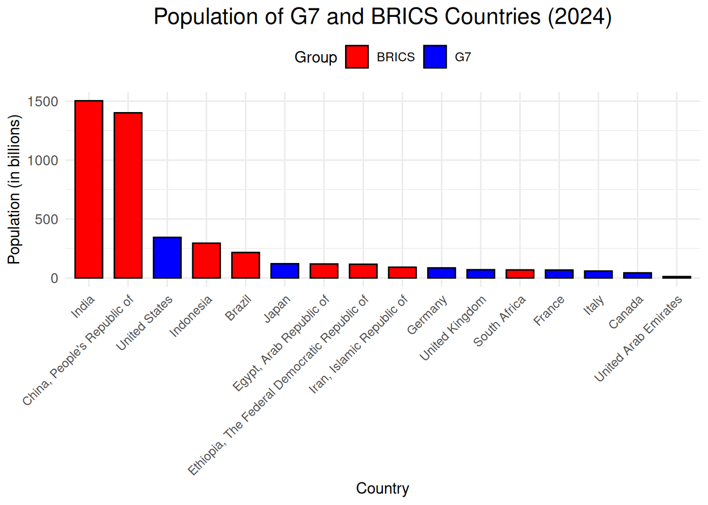
The analysis of GDP and GDP (PPP) shares between BRICS, G7, and the Rest of the World (2024–2029) was conducted to explore shifts in global economic power dynamics. We want assess whether emerging economies (BRICS) are closing the gap with advanced economies (G7) and how purchasing power parity (PPP) adjustments alter perceptions of economic influence. The data reveals a gradual rise in BRICS’ GDP share (25.13% to 27.43%) and GDP (PPP) share (35.29% to 37.56%) by 2029, alongside a modest decline in G7’s shares (GDP: 44.79% to 42.77%; PPP: 35.63% to 27.01%). This confirms the hypothesis of BRICS’ growing economic clout, particularly in PPP terms, which accounts for cost-of-living disparities and underscores their real economic weight. However, G7’s dominance in nominal GDP persists, highlighting a disconnect between raw economic output and adjusted living standards. Notably, the Rest of the World maintains a stable ~30% GDP share, suggesting neither bloc fully monopolizes global growth. Population data (though incomplete) likely reinforces BRICS’ potential, as their larger populations could drive long-term PPP gains. A key insight is that while BRICS is rising, structural factors (e.g., productivity, technological advancement) may limit their nominal GDP growth, challenging assumptions that demographic size alone guarantees economic parity. These findings complicate the narrative of a straightforward power shift, emphasizing the nuanced interplay between population, PPP adjustments, and traditional GDP metrics.